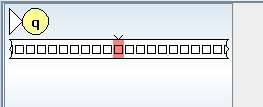
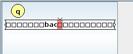

Homework 8: Turing Machines Part 2 (16 Points)
Chris Tralie
Overview / Logistics
Here's another small-ish homework to keep you engaged and practicing with Turing machines while we go over the background for decidability.
Problem 1 (3 Points)
This is a retry on problem 5 from homework 7. We want to show that if we have a "restricted Turing machine" (RTM) that can only move the tape to the right or stay in place, then it's equally powerful as a DFA; in other words, disabling the "move left" function significantly weakens the Turing machine. To reduce from a DFA to an RTM, it's basically the same proof as reducing to an ordinary Turing machine, since we only ever move right anyway and we don't use the left function. However, reducing the other way is more tricky. Show that any RTM can be reduced to a DFA; that is, explain in detail how a sequence of states in an RTM would be mapped to a sequence of states in a DFA that recognizes equivalent languages. You will have to carefully consider the cases when the Turing machine's tape head stays still and possibly makes substitutions, as this never happens in a DFA. But you can simulate the equivalent result with a DFA.
Problem 2 (3 Points)
We can show that Turing machines are at least as powerful as pushdown automata with the following series of reductions
- Pushdown automaton to multitape nondeterministic Turing machine, which has one tape for the input that only moves right, and one tape for the stack which is always at the edge of blanks
- Multitape nondeterministic Turing machine to single tape nondeterministic Turing machine, following a similar reduction for the deterministic case where we store all of the tapes on one separated by a delimeter # and we store where the tape heads are by putting a dot over each character
- Single tape nondeterministic Turing machine to multitape deterministic Turing machine using the reduction we talked about in class that uses 3 tapes: one for input, one for simulation of one branch, and another to store the branch.
- Multitape deterministic Turing machine to single tape deterministic Turing machine.
Actually, there's an even easier way if we recognize that all PDAs can be implemented with context free grammars, because we can create a nondeterministic Turing machine to enumerate all possible substitutions and accept if one of them happens to be our string. Regardless, we've shown that Turing machines are at least as powerful as PDAs, and we in fact know that they are more powerful because we've shown they can recognize certain languages that PDAs count.
However, if we have two stacks in our PDA, then the PDA becomes equally powerful to a Turing machine. Your job will be to prove this. It's straightforward to prove that Turing machines are at least as powerful as 2-stack PDAs with a minor tweak at step 1 that includes an additional tape for the second stack, so you don't need to bother proving that. But you do need to prove that any deterministic Turing machine can be reduced to a 2-stack PDA to complete the proof that they are equally powerful.
As a corollary, this means that 3 stack PDAs are equally powerful as 2 stack PDAs, since 2 stack PDAs are already as powerful as Turing machines.
Problem 3 (4 Points)
Create a Turing enumerator to enumerate all strings over the alphabet {a, b, c} in lexographic order (the order they would occur when sorted as strings in most programming languages). In particular, your machine should start with the sequence
a, b, c, aa, ab, ac, ba, bb, bc, ca, cb, cc, aaa, aab, aac, ...
You can think of this like doing counting in base 3 until you overflow to the next place, and when you do, resetting to all a's with one more character. We saw in class that this was an important subroutine for the tape that kept track of which branch we were exploring in a nondeterministic turing machine when reducing it to a deterministic turing machine.
Since JFLAP doesn't support enumerators, you'll have to hack an ordinary turing machine to do this, which has one designated tape as the "printing tape." You can do this with multiple tapes if you'd like, but it's possible to do it with one tape. You should just special state that you go to every time it's ready to print whatever is on the printing tape. You can check that this is working properly by stepping through your machine in a blank input in JFLAP.
For example, here is what I get when I start with an empty string and step through a, b, c, aa, ab, ac, ba, bb, bc, ca, cb, cc, aaa, aab, aac, aba, abb, abc, aca, acb, acc, baa, and bab. I paused the animation every time it entered the "qprint" state. I had multiple other states, but I called them all "q" so I wouldn't give away too much of the solution
Here's a turbo charge through a bunch more iterations
Problem 4 (3 Points)
Watch this video, and explain using the Church-Turing thesis why the Powerpoint app is theoretically in violation of the Apple Store's app guidelines.
Problem 5 (3 Points)
Let's now dive into an important problem in the history of algorithms/computing: Hilbert's 10th problem. It was very surprising to mathematicians that a problem could be posed that might not be able to be solved at all in general in our universe. But there is a special case that's solvable, and we'll explore it in this problem. Let
\[f(x) = c_1 x^n + c_2x^{n-1} + ... + c_nx + c_{n+1} \]
be a single variable polynomial with at least one real root (i.e. a value of x that makes it 0). Let cmax be the largest absolute value of any coefficient ci. Show that each real root x of f(x) must exist in the interval
\[ -| \frac{cmax}{c_1}(n+1) | \leq x \leq | \frac{cmax}{c_1}(n+1) | \]
Explain how this implies that Hilbert's 10th problem is actually decidable over single variable polynomials by describing at a high level a Turing machine to decide the language given the above bound (see Sipser 3.3 for some hints). To justify why it's decidable, explain why your machine would never have an infinite loop, even if it did take a while.